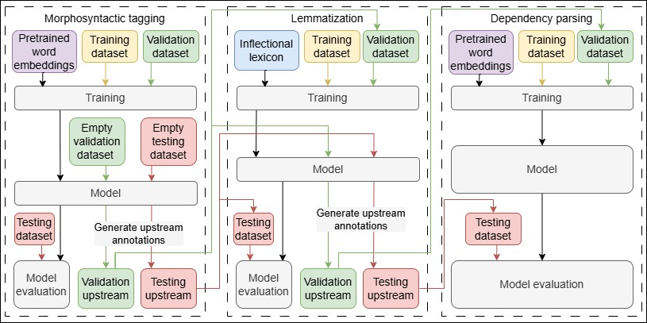

1V članku predstavljamo orodje CLASSLA-Stanza, cevovod za avtomatsko jezikovno označevanje južnoslovanskih jezikov, ki temelji na cevovodu za procesiranje naravnega jezika Stanza. Opišemo vse glavne izboljšave, ki jih prinaša CLASSLA-Stanza v primerjavi s Stanzo in podamo podroben opis postopka učenja modelov v različici 2.2, najnovejši različici orodja. Obenem poročamo o rezultatih delovanja cevovoda za različne jezike in jezikovne zvrsti. CLASSLA-Stanza dosega konsistentno visoke rezultate za vse podprte jezike in preseže rezultate izvornega cevovoda Stanza pri vseh podprtih jezikih. Predstavimo tudi novo funkcijo cevovoda, ki omogoča učinkovito procesiranje spletnih besedil, in opišemo učinkovitost cevovoda za označevanje transkriptov govora.
2Ključne besede: južnoslovanski jeziki, avtomatsko procesiranje jezika, označevalni cevovod, jezikovno označevanje
1We present CLASSLA-Stanza, a pipeline for automatic linguistic annotation of South Slavic languages, which is based on the Stanza natural language processing pipeline. We describe the main improvements in CLASSLA-Stanza with respect to Stanza and give a detailed description of the model training process for the latest 2.2 release of the pipeline. We also report performance scores produced by the pipeline for different languages and language varieties. CLASSLA-Stanza exhibits consistently high performance across all the supported languages and outperforms its parent pipeline Stanza at all the supported tasks. We also present the pipeline’s new functionality that enables efficient processing of web data and describe the efficiency of the pipeline for annotating written transcripts of spoken data.
2Keywords: South Slavic languages, automatic linguistic processing, annotation pipeline, linguistic annotation
1The South Slavic languages make up one of the three major branches of the Slavic language family. Despite being used by around 30 million people worldwide,1 many languages of this group remain relatively low-resourced and under-represented in the field of natural language processing. Goldhahn et al.2 include Macedonian and Bosnian in their list of languages that are significantly under-resourced despite having more than 1 million speakers.
2Although much additional work is required before South Slavic languages can approach the level of support enjoyed by linguistic giants such as English, steps have been taken towards establishing common platforms for supporting the development of new resources and tools for these languages. The CLARIN Knowledge Centre for South Slavic Languages (CLASSLA)3 was established as a result of prior cooperation in the development of language resources for Slovenian, Croatian, and Serbian and currently acts as a platform providing expertise and support for developing language resources for South Slavic languages.4 The efforts of the knowledge centre gave rise to the CLASSLA-Stanza5 pipeline for linguistic processing, which arose as a fork of the Stanza neural pipeline.6 CLASSLA-Stanza was created with the aim of providing state-of-the-art automatic linguistic processing for South Slavic languages7 and currently supports Slovenian, Croatian, Serbian, Macedonian, and Bulgarian. Additionally, Slovenian, Croatian, and Serbian have support for standard, nonstandard, and internet varieties, while Slovenian also supports processing spoken language transcripts. In contrast to its parent pipeline Stanza, CLASSLA-Stanza covers the standard Macedonian language, as well as the nonstandard and internet varieties of Slovenian, Croatian, and Serbian and the spoken variety of Slovenian. Besides the expanded coverage of languages and varieties, CLASSLA-Stanza shows improvements in performance at all presented levels.
3The aim of this paper is to provide both a systematic overview of the differences that CLASSLA-Stanza has to the official Stanza pipeline and a description of the model training procedure which was adopted when training models for the latest releases. The description of the training procedure is intended to serve as the main reference for future releases as well as for anyone using the CLASSA-Stanza tool to produce their own models for linguistic annotation.
4In accordance with this aim, we first describe the differences between CLASSLA-Stanza and Stanza in Section 2. Section 3 then introduces the datasets used for training the most recent models. Section 4 gives a general description of the model training process, which is followed by an analysis of the results produced by the latest models in Section 5.
5At present, the CLASSLA-Stanza annotation tool supports a total of six tasks: tokenization, morphosyntactic annotation, lemmatization, dependency parsing, semantic role labelling, and named-entity recognition. Tokenization is handled by one of two external rule-based tokenizers included in CLASSLA-Stanza, either the Obeliks tokenizer for standard Slovenian8 or the ReLDI tokenizer for nonstandard Slovenian and all other languages.9 While the basic tasks of tokenization, morphosyntactic annotation, lemmatization, and dependency parsing are covered at least for some languages in the parent Stanza pipeline, semantic role labelling and named entity recognition for South Slavic languages are available only in CLASSLA-Stanza.
6The current version of the models was trained on data annotated according to three separate systems for morphosyntactic annotation: the Universal part-of-speech tags and the Universal morphosyntactic features tags, which are both part of the Universal Dependencies framework for grammatical annotation10 and will henceforth be referred to as UPOS and UFeats, and the MULTEXT-East V6 specifications for morphosyntactic annotation,11 which are implemented as the language-specific XPOS tags in the CoNLL-U file format,12 the central file format used by CLASSLA-Stanza. For dependency parsing, the Universal Dependencies system for syntactic dependency annotation was used as well as the JOS syntactic dependencies system for Slovenian.13 Additionally, the annotation schema described in Krek et al.14 was used for semantic role label annotation, while the named entity annotation system followed the guidelines described by Zupan et al.15
7It must be noted that not all tasks are available for every supported language and variety. For instance, semantic role labelling currently relies on the JOS annotation system for dependency parsing of Slovenian and is thus only available for annotation of Slovenian datasets but should become available for Croatian in the future as there are training data available.16 Table 1 provides an overview of every language variety and the tasks it supports.
| Language | Variety | Tok | Morph | Lemma | Depparse | NER | SRL |
| Slovenian | standard | ✔ | ✔ | ✔ | ✔ | ✔ | ✔ |
| nonstandard | ✔ | ✔ | ✔ | ✘ | ✔ | ✘ | |
| spoken | ✔ | ✔ | ✔ | ✔ | ✘ | ✘ | |
| Croatian | standard | ✔ | ✔ | ✔ | ✔ | ✔ | ✘ |
| nonstandard | ✔ | ✔ | ✔ | ✘ | ✔ | ✘ | |
| Serbian | standard | ✔ | ✔ | ✔ | ✔ | ✔ | ✘ |
| nonstandard | ✔ | ✔ | ✔ | ✘ | ✔ | ✘ | |
| Bulgarian | standard | ✔ | ✔ | ✔ | ✔ | ✔ | ✘ |
| nonstandard | ✘ | ✘ | ✘ | ✘ | ✘ | ✘ | |
| Macedonian | standard | ✔ | ✔ | ✔ | ✘ | ✘ | ✘ |
| nonstandard | ✘ | ✘ | ✘ | ✘ | ✘ | ✘ |
8An earlier version of this overview was already presented at the Language Technologies and Digital Humanities conference in 2024,17 while this paper expands upon that report by describing the training of various new models that are included in the latest 2.2 release18 of the CLASSLA-Stanza pipeline, including new standard models for Slovenian UD dependency parsing and named entity recognition and also the first Slovenian models for annotating spoken language. We also describe new experiments that compare the effectiveness of Slovenian standard, nonstandard, and spoken models on transcripts of spoken language.
1The Stanza neural pipeline is centred around a bidirectional long short-term memory (Bi-LSTM) network architecture.19 CLASSLA-Stanza largely preserves the design of Stanza, except in some cases, such as tokenization, where a completely different model architecture is used. CLASSLA-Stanza also expands upon the original design with specific additions that help boost model performance for the South Slavic languages. This section thus lists the main differences between the two pipelines and provides an overview of the difference in the results produced by the models for one of the supported languages.
2On the level of tokenization and sentence segmentation, Stanza uses a joint tokenization and sentence segmentation model based on machine learning. We generally view such learnt tokenizers as suboptimal, since training data for the two tasks is always limited in size and thus too few tokenization and sentence-splitting phenomena can be learnt by the model during the training process. Due to this drawback, CLASSLA-Stanza implements rule-based tokenizers, which handle both the task of tokenization as well as sentence segmentation. As stated in the introduction, the two tokenizers used are the Obeliks tokenizer for standard Slovenian20 and the ReLDI tokenizer for nonstandard Slovenian and all other languages.21
3CLASSLA-Stanza also adds support for the use of external inflectional lexicons, which is not present in Stanza. For morphologically rich languages, applying this resource to the annotation process usually significantly increases the performance of the model.22 The South Slavic languages all have quite rich inflectional paradigms, which is why support for inflectional lexicons is present for almost all supported languages in the pipeline.
4Most languages support external lexicon use only during lemmatization, except for Slovenian, which supports lexicon use also during morphosyntactic tagging. In that case, the lexicon is put into operation during the tag prediction phase, when the model limits the possible predictions to only those tags that are present in the inflectional lexicon for the specific token. Lexicon usage during lemmatization is similar in both Stanza and CLASSLA-Stanza, the main difference being that Stanza builds a lexicon only from the Universal Dependencies training data, while CLASSLA-Stanza can additionally exploit an inflectional lexicon. Both Stanza and CLASSLA-Stanza use the lexicon for an initial lemma lookup and fall back to predicting the lemma only in case that the form with the corresponding tag is not present in the lexicon. One important difference in the lexicon lookup in CLASSLA-Stanza is that the lookup uses XPOS tags, which contain the full morphosyntactic information, while Stanza uses only the UPOS tag, which is not enough for an accurate lemma lookup in morphologically rich languages.
5When training models, Stanza uses a Universal Dependencies dataset as training data for training all the tasks in the pipeline and thus does not enable the user to train models on additional datasets. For certain layers, however, such as lemmatization and morphosyntactic tagging, the South Slavic languages often have more training data than available for dependency parsing, which is exploited by CLASSLA-Stanza. Thus, for example, instead of using only the 210 thousand tokens of data that are used for training the dependency parser, the latest set of standard Croatian models in CLASSLA-Stanza includes morphosyntactic tagging and lemmatization models which were trained on an additional 290 thousand tokens, manually annotated only on these two levels of annotation.
6CLASSLA-Stanza also has a special way of handling “closed-class” tokens. Closed-class control is a feature of the tokenizers and ensures that punctuation and symbols are assigned appropriate morphosyntactic tags and lemmas. It also prevents other tokens that are not defined as punctuation and symbols in the tokenizer from being annotated as such. In addition to punctuation and symbols, the Slovenian package also includes closed-class control for pronouns, determiners, prepositions, particles, and coordinating and subordinating conjunctions. These additional closed classes are controlled during the morphosyntactic tagging phase using the inflectional lexicon as a reference, disallowing any token to be labelled with a closed class label if it was not defined as such in the lexicon.23
7The Stanza pipeline relies on pretrained word embeddings as an underlying resource. While it uses embedding collections based on Wikipedia data, CLASSLA-Stanza goes the extra mile by using the CLARIN.SI embeddings,24 which are skipgram-based embeddings of 100 dimensions, trained with the fastText tool. These embeddings were primarily prepared for CLASSLA-Stanza but are useful for other tasks as well. They were trained on text collections that are several times larger than Wikipedia and were obtained through web crawling,25 which ensures much more diverse word embeddings and thereby also better handling of unseen words.
8When working with Slovenian, Croatian, or Serbian, the pipeline can be set to any of the four predetermined settings which are used for processing different varieties of the same language. These settings are called modes and can be either standard, nonstandard, or web. For Slovenian, an additional spoken mode is available. The processing modes determine which model is used on every level of annotation and are associated with their respective language varieties. The reasons for introducing separate processing modes for spoken and web texts are described in Sections 5.2 and 5.3. Below is an overview showing which model is used on every layer for every mode:
| Processing mode | Tokenizer | Morphosyntactic tagger | Lemmatizer | Dependency parser | NER tagger |
| standard | standard | standard | standard | standard | standard |
| nonstandard | nonstandard | nonstandard | nonstandard | standard | nonstandard |
| web | standard | nonstandard | nonstandard | standard | nonstandard |
| spoken | standard | spoken | spoken | spoken | nonstandard |
9The reason why the nonstandard and the web processing modes use the standard dependency parsing model is primarily the lack of training data for training a model beyond standard text and spoken transcripts. The lack of motivation for building a dataset for parsing nonstandard text lies in the fact that the parsing model has upstream lemma and morphosyntactic information at its disposal and therefore requires dedicated training data to a much lesser extent than those upstream processes.
10To illustrate the performance of CLASSLA-Stanza, Table 3 provides a comparison of the results produced by both Stanza and CLASSLA-Stanza when generating predictions using the Slovenian standard models on the SloBENCH evaluation dataset.26 SloBENCH is a platform for benchmarking various natural language processing tasks for Slovenian, which also includes a dataset for evaluating the tasks supported by CLASSLA-Stanza. The performance scores are presented in the form of micro-F1 scores, while the relative error reduction between the scores of the pipelines is presented in percentages.
| Task | Stanza | CLASSLA-Stanza | Relative error reduction |
| Sentence segmentation | 0.819 | 0.997 | 98% |
| Tokenization | 0.998 | 0.999 | 50% |
| Lemmatization | 0.974 | 0.992 | 69% |
| Morphosyntactic tagging - XPOS | 0.951 | 0.983 | 65% |
| Dependency parsing LAS | 0.865 | 0.911 | 34% |
11Despite CLASSLA-Stanza originating as a fork of Stanza, there are currently no plans to merge CLASSLA-Stanza with the original Stanza project, as CLASSLA-Stanza is intended as a separate project with a different focus. While Stanza takes a broader approach, aiming to achieve good performance across a wide range of different languages, CLASSLA-Stanza focuses more on language-specific solutions that improve performance for the South Slavic languages in particular.
1The latest models included in the 2.2 release of CLASSLA-Stanza were trained on a variety of datasets in five different languages: Slovenian, Croatian, Serbian, Macedonian, and Bulgarian. Slovenian had three types of training datasets available—a standard training dataset, a nonstandard training dataset, and a spoken training dataset. Croatian and Serbian were associated with two training datasets—one consisting of standard-language texts and one consisting of nonstandard texts—while Bulgarian and Macedonian only had a standard-language training dataset available.
2Slovenian standard language models were first trained using the 1.0 version of the SUK training corpus.27 It contains approximately 1 million tokens of text manually annotated on the levels of tokenization, sentence segmentation, morphosyntactic tagging, and lemmatization. Some subsets also contain syntactic dependency, named entity, multi-word expression, coreference, and semantic role labelling annotations. In the second half of 2024, an updated version of the SUK training corpus was released, containing substantially improved annotation quality on the level of UD dependency relation annotations. This new version of the corpus was dubbed SUK 1.1,28 and an updated dependency parsing model was trained using the new data and included as the default and best-performing dependency parsing model in the 2.2 release of the CLASSLA-Stanza pipeline.
3Nonstandard Slovenian models were trained on a combination of the standard training corpus and the nonstandard Janes-Tag training corpus,29 which consists of tweets, blogs, forums, and news comments, and is approximately 218 thousand tokens in size. It contains manually curated annotations on the levels of tokenization, sentence segmentation, word normalization, morphosyntactic tagging, lemmatization, and named entity annotation.
4Slovenian spoken models were trained on a combination of the SUK corpus and the Spoken Slovenian UD Treebank,30 which is composed of transcribed audio recordings of spoken Slovenian and contains approximately 98 thousand tokens annotated on the levels of tokenization, sentence segmentation, morphosyntactic tagging, lemmatization, and UD dependency relations. Some oversampling of the spoken training data had to be performed before training due to the relatively small size of the spoken training dataset compared to the standard written training dataset. 31
5Croatian standard language models were trained on the hr500k training corpus,32 which consists of about 500 thousand tokens and is manually annotated on the levels of tokenization, sentence segmentation, morphosyntactic tagging, lemmatization, and named entities. Portions of the corpus also contain manual syntactic dependency, multi-word expression, and semantic role labelling annotations. Croatian nonstandard models were trained on a combination of the standard training corpus and the nonstandard ReLDI-NormTagNER-hr training corpus.33 The ReLDI-NormTagNER-hr corpus contains about 90 thousand tokens of nonstandard Croatian text from tweets and is manually annotated on the levels of tokenization, sentence segmentation, word normalization, morphosyntactic tagging, lemmatization, and named entity recognition.
6Serbian standard models were trained on the Serbian portion of the SETimes corpus,34 which contains about 97 thousand tokens of news articles manually annotated on the levels of tokenization, sentence segmentation, morphosyntactic tagging, lemmatization, and dependency parsing.
7Serbian nonstandard models were trained, similar to the previously introduced languages, on a combination of the standard dataset and the nonstandard ReLDI-NormTagNER-sr training corpus.35 ReLDI-NormTagNER-sr consists of about 90 thousand tokens of Serbian tweets manually annotated on the levels of tokenization, sentence segmentation, word normalization, morphosyntactic tagging, lemmatization, and named entity recognition.
8Macedonian standard models were trained on a corpus made up of the Macedonian version of the MULTEXT-East “1984” corpus36 and the Macedonian SETimes.MK corpus. The MULTEXT-East “1984” corpus consists of the novel 1984 by George Orwell in approximately 113 thousand tokens, while the SETimes.MK corpus in its 0.1 version is made up of 13,310 tokens of news articles.37 Both corpora are manually annotated on the levels of tokenization, sentence segmentation, morphosyntactic tagging, and lemmatization. Combining the corpora was performed in the following way: the 1984 corpus was first split into three parts to obtain the training, validation, and testing data splits, after which the training data was enriched with three repetitions of the SETimes corpus to ensure a sensible combination of literary and newspaper data in the training subset.
9Bulgarian standard models were trained on the BulTreeBank training corpus,38 which consists of approximately 253 thousand tokens manually annotated on the levels of tokenization, sentence segmentation, morphosyntactic tagging, and lemmatization. About 60% of the dataset also contains manual dependency parsing annotations.
10Table 4 provides an overview of dataset sizes for every language, variety, and annotation layer.
| Language | Variety | Morph | Lemma | Depparse | SRL |
| Slovenian | standard | 1,025,639 | 1,025,639 | 267.097 | 209.791 |
| nonstandard | 222.132 | 222.132 | n/a | n/a | |
| spoken | 98.396 | 98.396 | 98.396 | n/a | |
| Croatian | standard | 499.635 | 499.635 | 199.409 | n/a |
| nonstandard | 89.855 | 89.855 | n/a | n/a | |
| Serbian | standard | 97.673 | 97.673 | 97.673 | n/a |
| nonstandard | 92.271 | 92.271 | n/a | n/a | |
| Bulgarian | standard | 253.018 | 253.018 | 156.149 | n/a |
| Macedonian | standard | 153.091 | 153.091 | n/a | n/a |
1In this section, the model training process is described in detail. Only a descriptive account of the process is provided here. For a list of the specific commands and oversampling scripts used, refer to the GitHub repository of the training procedure.39
2In this paper, we give the general overview of the process which is common to all supported languages. For the specific steps that are unique to each language, please refer to the CLASSLA-Stanza technical report, a longer and older version of this paper available on arXiv.40 The language-specific steps were necessary due to some features and levels of annotation (semantic role labelling, oversampling of the training data, etc.) which are unique to certain languages, while all languages share the steps described below.
3The illustration of the basic procedure that was used to train standard models for the levels of morphosyntactic tagging, lemmatization, and dependency parsing for the latest release of CLASSLA-Stanza is shown in Figure 1.

Source: Own work4As stated in the introduction, all tokenizers used by CLASSLA-Stanza are rule-based and thus do not need to be trained. Model training is thus performed on pretokenized data, typically beginning on the level of morphosyntactic tagging and continuing on through the subsequent annotation layers.
5To ensure realistic evaluation results, automatically generated upstream annotations, rather than manually assigned annotations, were used as validation and test dataset inputs on each layer. For this, empty validation and test datasets first had to be generated by stripping all annotations from the test and validation datasets on all levels except for tokenization. These empty files were filled with model-generated annotations on each level, so that validation and model evaluation on subsequent layers could be performed on automatically generated upstream labels. Training datasets were not annotated with automatically generated upstream labels, since it is unclear whether this would lead to any performance gains and would require a more complicated type of cross-validation method such as jackknifing (splitting the data into N bins, training a model on N-1 bins, and annotating the N-th bin, repeating the process N times).
6For each language, standard models were first trained. For morphosyntactic tagging, the training and validation datasets from the prepared three-way data split along with the pretrained word embeddings were used as inputs to the tagger module. After training, the tagger was used in predict mode to generate predictions on the empty test dataset and evaluate the performance of the tagger. After predictions were made for the test set, predictions were generated in the empty validation dataset as well to produce a validation file with automatically generated morphosyntactic labels, that can be used later during training of subsequent annotation layer models, such as those for lemmatization and dependency parsing.
7Once morphosyntactic predictions and evaluation results were obtained, the lemmatizer was trained. The validation and training datasets were used as inputs. In addition, for most languages, the inflectional lexicon is also provided to the lemmatizer as an underlying resource. During training, the lexicon is stored in the lemmatization model file to act as an additional controlling element during lemmatization. After training, the lemmatizer was run in predict mode to obtain evaluation results and add lemma predictions to the validation and test datasets for the training of the dependency parser model.
8The dependency parser model was trained after lemmatizer training was finalized. CLASSLA-Stanza currently supports two types of annotation systems for syntactic dependency annotation: the UD dependency parsing annotation system, which is available for all supported languages except Macedonian, and the JOS parsing system, which is only available for Slovenian.41 The parser was run in training mode using the training and validation datasets42 as inputs along with the pretrained word embeddings. After training, the parser was run in predict mode to obtain evaluation results.
9The process for training models for named-entity recognition was quite similar to the other tasks. The tagger training here accepts pretrained word embeddings and training and validation datasets as underlying resources. After training, the named entity recognition tagger can be run in predict mode to obtain evaluation results.
10The spoken models were trained using the same process as the standard models, and a similar process was also followed for the nonstandard models with a few notable exceptions. Firstly, no syntactic dependency annotations are present in the nonstandard datasets. As a result, no nonstandard dependency parsing models were trained. Before training the nonstandard models, approximately 20% of diacritics were removed from the training datasets to ensure that the models will learn to effectively handle dediacritized forms, which occur prominently in online communication.
1As noted in Section 2, CLASSLA-Stanza significantly outperforms Stanza on the Slovenian benchmark, with the relative error reduction between 34% and 98%, depending on the processing layer.
2However, in order to fully assess the performance of the newly-trained models, we conduct a series of additional performance analyses in this section. In Section 5.1, we give a detailed rundown of the performance of the models for various UPOS and syntactic dependency labels for each language. In Section 5.2, we present experiments using various Slovenian models to annotate spoken data and discuss why the training of models specifically dedicated to annotating spoken transcripts was justified. Finally, in Section 5.3 we present a more qualitative investigation into the performance of the models on web-specific data.
1To obtain a sense of which categories a model struggles with and which ones it handles well, model predictions for specific UPOS and UD syntactic relations were inspected. An accuracy score was calculated for all 17 UPOS labels and the 12 most frequent UD syntactic relations in the Croatian hr500k training corpus.43 The accuracy score was obtained by taking the number of correct predictions for a single label in the test dataset and dividing it by the total number of occurrences of that label in the test dataset. The resulting accuracies for all the UPOS tags are contained in Table 5, while Table 6 contains accuracies for each UD dependency relation.
| UPOS tag | Accuracy | |||||||||
| sl-st | sl-nonst | sl-spok | hr-st | hr-nonst | sr-st | sr-nonst | mk-st | bg-st | Average | |
| ADJ | 99.31 | 90.71 | 97.72 | 97.93 | 92.27 | 99.27 | 94.58 | 97.74 | 98.28 | 96.26 |
| ADP | 99.90 | 98.54 | 100 | 99.96 | 99.82 | 100.00 | 99.84 | 99.75 | 99.92 | 99.72 |
| ADV | 95.98 | 91.89 | 94.70 | 95.35 | 91.59 | 95.42 | 87.93 | 95.14 | 97.60 | 93.86 |
| AUX | 98.62 | 96.31 | 96.13 | 99.60 | 99.59 | 100.00 | 98.81 | 99.50 | 92.75 | 98.15 |
| CCONJ | 98.01 | 97.03 | 98.93 | 96.53 | 97.21 | 98.95 | 97.21 | 97.94 | 97.87 | 97.59 |
| DET | 99.29 | 93.29 | 98.75 | 95.68 | 94.08 | 98.88 | 96.74 | 100.00 | 87.79 | 95.72 |
| INTJ | 80.00 | 75.82 | 99.49 | 71.43 | 90.22 | n/a | 87.65 | 71.43 | 47.58 | 74.88 |
| NOUN | 98.88 | 93.75 | 98.40 | 98.33 | 93.98 | 99.23 | 97.66 | 99.55 | 98.53 | 97.49 |
| NUM | 99.74 | 98.41 | 87.78 | 98.87 | 100.00 | 98.71 | 100.00 | 100.00 | 98.17 | 99.24 |
| PART | 99.46 | 95.12 | 98.59 | 85.16 | 90.64 | 94.12 | 89.39 | 90.16 | 79.94 | 90.50 |
| PRON | 99.47 | 97.25 | 97.53 | 98.68 | 98.19 | 97.64 | 98.47 | 98.84 | 99.15 | 98.46 |
| PROPN | 98.71 | 78.23 | 96.45 | 93.65 | 77.81 | 97.31 | 83.68 | 97.97 | 98.14 | 90.69 |
| PUNCT | 100.00 | 99.79 | 100 | 100.00 | 99.73 | 100.00 | 99.82 | 100.00 | 100.00 | 99.92 |
| SCONJ | 99.78 | 97.99 | 100 | 95.72 | 94.79 | 99.52 | 98.25 | 94.70 | 99.61 | 97.55 |
| SYM | 100.00 | 99.85 | n/a | 90.91 | 99.10 | 100.00 | 99.38 | n/a | n/a | 98.21 |
| VERB | 97.05 | 94.12 | 95.98 | 99.30 | 97.84 | 99.18 | 98.76 | 99.74 | 96.79 | 97.85 |
| X | 59.13 | 75.67 | 83.53 | 77.15 | 80.10 | 43.33 | 62.86 | n/a | 0.00 | 56.89 |
2The highest accuracies among UPOS tags are generally found with tags that represent function word classes, such as AUX (auxiliaries), ADP (adpositions), and PRON (pronouns), and closed-class tags, such as PUNCT (punctuation) and SYM (symbols), which are handled by the pipeline, inter alia, through rules in the tokenizer, as described in Section 2. Conversely, the lowest accuracies are found with the infrequent INTJ tag (interjections)—of which there were only 5 instances in total in the Slovenian standard test dataset and no instances at all in the Serbian standard test dataset—and the loosely delineated X tag, which is used for certain abbreviations,44 URLs, foreign language tokens, and everything else that does not fit into any of the other categories.
| UD relation | Accuracy | |||||
| sl | sl-spok | hr | sr | bg | Average | |
| punct | 99.97 | 100 | 100.00 | 100.00 | 99.91 | 99.98 |
| amod | 98.43 | 97.96 | 95.97 | 97.38 | 98.66 | 97.66 |
| case | 99.71 | 99.73 | 99.32 | 99.21 | 99.86 | 99.51 |
| nmod | 92.95 | 86.29 | 91.22 | 90.99 | 91.49 | 91.61 |
| nsubj | 90.85 | 85.29 | 93.39 | 94.30 | 91.10 | 92.32 |
| obl | 91.64 | 87.89 | 85.31 | 87.24 | 77.17 | 85.43 |
| conj | 92.24 | 83.80 | 90.92 | 93.06 | 93.95 | 92.61 |
| root | 92.75 | 85.71 | 94.98 | 95.77 | 95.97 | 94.97 |
| obj | 91.06 | 89.03 | 82.84 | 91.39 | 90.18 | 89.44 |
| aux | 99.74 | 99.34 | 97.88 | 97.57 | 90.46 | 96.35 |
| cc | 98.16 | 95.89 | 97.63 | 97.96 | 99.14 | 98.14 |
| advmod | 97.10 | 94.67 | 93.58 | 91.82 | 97.91 | 95.01 |
3A similar trend is found among the UD syntactic relations. Relations such as case (which usually connects nominal heads with adpositions), cc (connects conjunct heads with coordinating conjunctions), and aux (connects verbal heads with auxiliary verbs) are used for fixed grammatical patterns that permit little variation. These display consistently high accuracies across all languages. Somewhat lower accuracies are displayed by the obl relation, mostly used for oblique nominal arguments which play a less central role in the sentence structure than the core verbal arguments. It has been found that previous versions of dependency parsing models for CLASSLA-Stanza often incorrectly assigned the obj relation (used for direct objects) to instances which should receive the obl relation and vice versa.45 Upon inspection of the outputs produced by the newly-trained Slovenian and Croatian parsers, it was found that this error persists also in the current version, which is a likely reason for the performance drops of the obl and obj relations in other languages as well.
4The Slovenian spoken parsing model noticeably stands out, as there is a clear drop with the nmod, nsubj, obl, conj, root, and to some degree also the obj relations. A subsequent inspection of the model’s predictions in these cases revealed that these errors can be ascribed to the highly fragmentary nature of spoken language, causing the model to produce errors when trying to annotate fragments for which the exact role in the wider sentence structure is more difficult to determine unambiguously. This prompted the question of how the performance of the Slovenian spoken models compares to that of the standard and nonstandard models when tasked with annotating transcripts of spoken language. We explore this question in the following section.
1Even though transcripts of spoken Slovenian, manually annotated on the levels of morphosyntactic tagging, lemmatization, and dependency parsing, have been available for quite some time already in the form of the Spoken Slovenian UD Treebank,46 this resource has recently received a considerable upgrade,47 and it now contains more than twice the amount of data than what was available in its previous editions. This new version of the resource, which is included in the 2.16 release of the Universal Dependencies treebank collection48 and the ROG training corpus,49 served as a basis on which new models specifically adapted to processing spoken language transcripts were trained for the first time and included in the 2.2 release of the CLASSLA-Stanza annotation pipeline.
2However, it remained to be tested whether the newly trained models truly offer any considerable advantages to the already available standard and nonstandard models when used to annotate transcripts of spoken Slovenian. To investigate this, all three models currently available for Slovenian were evaluated on the test set of the Spoken Slovenian Treebank. The models were evaluated on the levels of morphosyntactic tagging, lemmatization, and UD dependency parsing. The results of this comparison experiment are shown in Table 7.50
| Model | Morphosyntactic tagging | Lemmatization | UD dependency parsing |
| Spoken | 95.6 | 99.23 | 81.91 |
| Standard | 90.08 | 98.68 | 69.81 |
| Nonstandard | 90.46 | 98.35 | n/a |
3The results show that the spoken models clearly outperform the other two sets of models in all three tasks. This increase in performance is particularly evident with the dependency parsing models, suggesting that the differences between spoken and written language in Slovenian are most pronounced at the syntactic level, which is a finding also reported by Dobrovoljc and Čibej.51 It therefore appears that the training of dedicated models for spoken language annotation was justified and should in the future be expanded to other languages supported by CLASSLA-Stanza as well.
4To facilitate the use of spoken models, a special spoken processing mode was added to the Slovenian pipeline in version 2.2 that combines the standard tokenizer and spoken models for all subsequent layers of annotation.
1The model evaluations described in Section 5.1 provide a good summary of how well the CLASSLA-Stanza pipeline performs on both purely standard and purely nonstandard data. However, modern corpus construction techniques—especially for low-resource languages—often rely on crawling data from online conversations, articles, blogs, etc.,52 which typically consist of a mixture of different language styles and varieties. To illustrate how well the new CLASSLA-Stanza models handle language originating from the internet, this section provides a brief manual qualitative analysis of their performance on a corpus of web data.
2The CLASSLA-Stanza tool was used with the newly-trained models to add linguistic annotations to the CLASSLA-web corpora, which consist of texts crawled from the internet domains of the corresponding languages.53 In preparation for the annotation process, a short test was conducted with the goal of determining which of the two sets of models that primarily handle written language—the standard or the nonstandard—is best suited to be used for annotating the CLASSLA-web corpora. Shorter portions of the corpora were annotated on the levels of tokenization, sentence segmentation, morphosyntactic tagging, and lemmatization, once using the standard and once using the nonstandard model. The two outputs were then compared, and a qualitative analysis of the differences was conducted.
3Quite a few of the analysed differences in the model outputs were connected to the processes of sentence segmentation and tokenization. In the CLASSLA-Stanza annotation pipeline, both processes are controlled by the tokenizer. As stated in Section 2, the pipeline uses two different tokenizers depending on the language and the processing mode used.54 The analysis showed that sentence segmentation was performed much more accurately by Obeliks and the standard mode of the ReLDI tokenizer. The nonstandard mode of the ReLDI tokenizer appears to have a tendency towards producing shorter segments, since it is optimized for processing social media texts such as tweets. Thus, the nonstandard tokenizer very consistently produces a new sentence after periods, question marks, exclamation marks, and other punctuation, even when these characters do not signify the end of a sentence. The following Croatian example in a simplified CoNLL-U format shows one such case of incorrect sentence segmentation due to the use of reported speech. The original string „Svaku našu riječ treba da čuvamo kao najveće blago.“ was split into two segments—the first ending on the period character, while the quotation mark was moved to a separate sentence:
4# newpar id = 76
# sent_id = 76.1
# text = „ Svaku našu riječ treba da čuvamo kao
najveće blago.
1 „
2 Svaku
3 našu
4 riječ
5 treba
6 da
7 čuvamo
8 kao
9 najveće
10 blago
11 .
# sent_id = 76.2
# text = “
1 “55
5The nonstandard models handled nonstandard word forms quite a bit better than the standard models. Particularly problematic for the standard Slovenian models were forms with missing diacritics, such as “sel” instead of šel, “cist” instead of čisto, “hoce” instead of hoče, and “clovek” instead of človek. These were often assigned incorrect lemmas and morphosyntactic tags. An example of the standard lemmatiser output for the word form “hoce” (which corresponds to hoče in standard Slovenian (Eng. “he/she/it wants”)) is displayed below. The model invents a nonexistent lemma “hocati”, while the correct form should be the standard Slovenian hoteti:
6# sent_id = 53.1
# text = lev je lev pa naj govori kar kdo hoce
1 lev lev
2 je biti
3 lev lev
4 pa pa
5 naj naj
6 govori govoriti
7 kar kar
8 kdo kdo
9 hoce hocati56
7Nonstandard forms which do not differ much from their standard counterparts, such as “zdej” as opposed to “zdaj” and “morš” as opposed to “moraš”, were generally handled well by both sets of models and did not cause many discrepancies in the outputs.
8The analysis of such differences in the model outputs showed that the best results for the web corpus were achieved on the one hand by the standard tokenizer, and on the other by the nonstandard models for all subsequent levels of annotation. In light of this, a new web mode was implemented for the CLASSLA-Stanza pipeline. This new mode combines the standard tokenizer and nonstandard models for the other layers in a single package and is intended specifically for the annotation of texts originating on the Internet.
1In this paper, we provided an overview of the CLASSLA-Stanza pipeline for linguistic processing of the South Slavic languages and described the training process for the models included in the latest release of the pipeline. We described the main design differences to the Stanza neural pipeline, from which CLASSLA-Stanza arose as a forked project. We provided a summary of the model training process, while the technical documentation57 should be consulted for a more detailed description of the training process for each language. We also presented per-label performance scores for UPOS labels from standard and nonstandard models and most frequent UD labels from standard models.
2CLASSLA-Stanza gives consistent results across all supported languages and outperforms the Stanza pipeline on all supported NLP tasks, as illustrated in Sections 2 and 4. However, low accuracies are still seen for infrequent labels and pairs of labels that are not easily disambiguated. It remains to be seen whether larger and more diverse training datasets can contribute to improving model performance in these specific cases, or rather the move to contextual embeddings, i.e., transformer models. The newly included spoken models perform much better on transcripts of spoken language, and they can be easily deployed using the special spoken processing mode implemented within CLASSLA-Stanza. Additionally, when processing texts obtained from the Internet, special care must be taken to use the combination of models that is best suited for the task, which is why we also described the special web processing mode.
3The release of a specialized pipeline for linguistic processing of South Slavic languages is an important new milestone in the development of digital resources and tools for this relatively under-resourced group of languages. However, there is still much left to be achieved and improved upon. Full support for all annotation tasks and modalities, such as, for instance, semantic role labelling and the spoken modality, remains to be extended to other languages as well. As larger training datasets become available, more capable models can be trained for the currently supported languages. In addition, the aim is also to extend support to other members of the South Slavic language group, provided that training datasets of sufficient size are eventually produced for those languages as well. Finally, the performance of the CLASSLA-Stanza pipeline should also be compared to other recent state-of-the-art tools for automatic linguistic annotation, such as Trankit,58 which was shown to outperform Stanza over a large number of languages and datasets.
1The work described by this paper was made possible by the Development of Slovene in a Digital Environment project (Razvoj slovenščine v digitalnem okolju, project ID: C3340-20-278001), financed by the Ministry of Culture of the Republic of Slovenia and the European Regional Development Fund, the Language Resources and Technologies for Slovene research program (project ID: P6-0411), the MEZZANINE project (Basic Research for the Development of Spoken Language Resources and Speech Technologies for the Slovenian Language, project ID: J7-4642), the SPOT project (A Treebank-Driven Approach to the Study of Spoken Slovenian, Z6-4617), and the Large Language Models for Digital Humanities project (Grant GC-0002), all financed by the Slovenian Research Agency, and the CLARIN.SI research infrastructure.
Luka Terčon
Kaja Dobrovoljc
Nikola Ljubešić
1Predstavljamo CLASSLA-Stanza, orodje za učinkovito jezikovno obdelavo besedil v naravnem jeziku, ki podpira več južnoslovanskih jezikov in je posebej prilagojeno zanje. Najnovejša različica orodja podpira obdelavo besedil v slovenščini, hrvaščini, srbščini, bolgarščini in makedonščini. Orodje je nastalo kot razvejitev cevovoda Stanza za jezikovno obdelavo, z vrsto novih izboljšav. V tem članku opisujemo glavne razlike med CLASSLA-Stanza in Stanza, podajamo pregled procesa usposabljanja za izdelavo modelov, vključenih v najnovejšo različico orodja 2.2, podajamo pregled zmogljivosti najnovejših modelov in razpravljamo o učinkovitosti cevovoda za označevanje govorjenih besedil in besedil, ki izvirajo z interneta.
2CLASSLA-Stanza ohranja večino arhitekture in zasnove Stanza, vendar uvaja nekaj ključnih sprememb, med drugim specializiran niz pravilnih tokenizatorjev, ki obdelujejo segmentacijo in tokenizacijo stavkov, podporo za uporabo zunanjih fleksijskih leksikonov kot dodatnega kontrolnega elementa med napovedovanjem, specializiran način obdelave besed zaprtega razreda in podporo za več dodatnih jezikovnih različic, kot so nestandardni jezik, govorjeni jezik in besedila, pridobljena z interneta.
3Splošni proces usposabljanja modela za CLASSLA-Stanza sledi zaporednemu postopku, pri katerem se usposabljanje izvaja na predhodno tokeniziranih podatkih, model pa se usposablja za vsako plast označevanja. Po usposabljanju modela za vsako plast se ta model uporabi za samodejno generiranje navzgornjih označb za validacijske in testne podatkovne nize, ki se nato uporabijo med usposabljanjem in ocenjevanjem modelov na naslednjih plasteh označevanja. Med zadnjim krogom usposabljanja modelov so bili modeli najprej usposobljeni za morfosintaktično označevanje, nato za lematizacijo in nazadnje za razčlenjevanje odvisnosti. Med usposabljanjem modela za lematizacijo je bil modulu za usposabljanje na voljo fleksijski leksikon, medtem ko slovenščina podpira tudi uporabo fleksijskega leksikona med usposabljanjem morfosintaktičnega označevalca. Usposabljanje nestandardnih in govornih modelov je potekalo po podobnem postopku z nekaj manjšimi odstopanji.
4Predstavljamo ocene natančnosti modelov za vse jezike na različnih oznakah v naborih oznak UD Part-of-Speech in UD dependency relation. Pri oznakah Part-of-Speech so najvišje natančnosti na splošno ugotovljene pri razredih funkcionalnih besed, najnižje pa pri redki oznaki INTJ in oznaki X, ki je slabo opredeljena. Pri odvisnostnih odnosih odnosi case, cc in aux kažejo dosledno visoko natančnost v vseh jezikih, medtem ko nekoliko nižjo natančnost kaže odnos obl, ki se večinoma uporablja za posredne nominalne argumente, ki imajo v stavčni strukturi manj osrednjo vlogo kot glavni verbalni argumenti.
5Prav tako ponujamo analizo na novo usposobljenih govornih modelov, ki so na voljo za slovenski jezik v najnovejši različici CLASSLA-Stanza. Primerjali smo slovenske govorne morfosintaktične modele označevanja, lematizacije in odvisnostnega razčlenjevanja z zmogljivostjo ustreznih standardnih in nestandardnih modelov pri označevanju transkriptov govorjenega jezika. Rezultati kažejo, da govorni modeli znatno presegajo standardne in nestandardne modele. Usposabljanje modelov, ki so posebej prilagojeni govorjenemu jeziku, je bilo zato upravičeno in bi ga bilo treba v prihodnosti razširiti na druge jezike.
6Opravili smo tudi analizo, da bi ocenili, kako dobro modeli CLASSLA-Stanza obdelujejo besedila, ki izvirajo z interneta. Ugotovili smo, da so standardni tokenizatorji bolje obdelovali segmentacijo stavkov, nestandardni modeli pa nestandardne oblike, ki se pojavljajo v internetnem jeziku, na vseh drugih ravneh označevanja. Posledično je bil implementiran nov način obdelave spleta, ki je vključen v najnovejšo različico procesa.
* Tch. Asst., Faculty of Arts, University of Ljubljana, Aškerčeva 2, SI-1000 Ljubljana, Slovenia; Faculty of Computer and Information Science, University of Ljubljana, Večna pot 113, SI-1000 Ljubljana, Slovenia, luka.tercon@ff.uni-lj.si; ORCID: 0009-0006-3237-3583
** PhD, Res. Assoc., Faculty of Arts, University of Ljubljana, Aškerčeva 2, SI-1000 Ljubljana, Slovenia; Jožef Stefan Institute, Jamova 39, SI-1000 Ljubljana, kaja.dobrovoljc@ff.uni-lj.si; ORCID: 0000-0002-5909-7965
*** PhD, Sr. Res. Assoc., Jožef Stefan Institute, Jamova 39, SI-1000 Ljubljana, Slovenia; Faculty of Computer and Information Science, University of Ljubljana, Večna pot 113, SI-1000 Ljubljana, Slovenia; Institute of Contemporary History, Privoz 11, SI-1000 Ljubljana, Slovenia,nikola.ljubesic@ijs.si; ORCID: 0000-0001-7169-9152
1. Nikola Ljubešić et al., “Tour de CLARIN: The CLARIN Knowledge Centre for South Slavic Languages (CLASSLA),” CLARIN, published 18 November, 2021, https://www.clarin.eu/blog/tour-de-clarin-clarin-knowledge-centre-south-slavic-languages-classla.
2. Dirk Goldhahn et al., “Corpus collection for under-resourced languages with more than one million speakers,” paper presented at the Collaboration and Computing for Under-Resourced Languages (CCURL) workshop, 2016, http://www.lrec-conf.org/proceedings/lrec2016/workshops/LREC2016Workshop-CCURL2016_Proceedings.pdf#page=74.
3. CLASSLA: Knowledge centre for South Slavic languages, https://www.clarin.si/info/k-centre/.
4. Nikola Ljubešić et al., “Together we are stronger: Bootstrapping language technology infrastructure for South Slavic languages with CLARIN. SI,” in Darja Fišer and Andreas Witt, eds., CLARIN. The Infrastructure for Language Resources (De Gruyter, 2022), 429–56.
5. GitHub - clarinsi/classla: CLASSLA Fork of the Official Stanford NLP Python Library for Many Human Languages, https://github.com/clarinsi/classla/.
6. Peng Qi et al., “Stanza: A Python Natural Language Processing Toolkit for Many Human Languages,” paper presented at the 58th Annual Meeting of the Association for Computational Linguistics: System Demonstrations, 2020, https://doi.org/10.18653/v1/2020.acl-demos.14.
7. Nikola Ljubešić and Kaja Dobrovoljc, “What Does Neural Bring? Analysing Improvements in Morphosyntactic Annotation and Lemmatisation of Slovenian, Croatian and Serbian,” paper presented at the 7th Workshop on Balto-Slavic Natural Language Processing, 2019, https://doi.org/10.18653/v1/W19-3704. Kaja Dobrovoljc et al., “Improving UD processing via satellite resources for morphology,” paper presented at the Third Workshop on Universal Dependencies (UDW, SyntaxFest 2019), 2019, https://doi.org/10.18653/v1/W19-8004.
8. Miha Grčar et al., “Obeliks: statisticni oblikoskladenjski oznacevalnik in lematizator za slovenski jezik” [Obeliks: A Statistical Morphosyntactic Annotation and Lemmatization Tool for the Slovenian Language], paper presented at the Eighth Language Technologies Conference, 2012, https://nl.ijs.si/isjt12/proceedings/isjt2012_17.pdf. The repository for the tool can be found at: https://github.com/clarinsi/obeliks.
9. Tanja Samardžić et al., “Regional Linguistic Data Initiative (ReLDI),” paper presented at the 5th Workshop on Balto-Slavic Natural Language Processing, 2015, https://aclanthology.org/W15-5306/. The repository for the tool can be found at: https://github.com/clarinsi/reldi-tokeniser.
10. Marie-Catherine de Marneffe et al., “Universal Dependencies,” Computational Linguistics 47, No. 2 (07 2021): 255–308, https://doi.org/10.1162/coli_a_00402.
11. Tomaž Erjavec, “MULTEXT-East: Morphosyntactic Resources for Central and Eastern European Languages,” Language Resources and Evaluation 46, No. 1 (2012), http://www.jstor.org/stable/41486069.
12. CoNLL-U Format, https://universaldependencies.org/format.html.
13. Tomaž Erjavec et al., “The JOS Linguistically Tagged Corpus of Slovene,” paper presented at the Seventh International Conference on Language Resources and Evaluation (LREC`10), 2010, https://aclanthology.org/L10-1087/.
14. Simon Krek et al., “Označevanje udeleženskih vlog v učnem korpusu za slovenščino” [Annotating Semantic Roles in a Training Corpus for Slovenian], paper presented at the Conference on Language Technologies and Digital Humanities (JT-DH-2016), 2016, https://doi.org/10.5281/zenodo.14165095.
15. Katja Zupan et al., “Smernice Janes-NER za označevanje imenskih entitet v slovenskem jeziku: Različica 1.1,” CJVT Wiki, https://wiki.cjvt.si/books/08-imenske-entitete/page/oznacevalne-smernice.
16. Nikola Ljubešić, and Tanja Samardžić, “Croatian Linguistic Training Corpus Hr500k 2.0,” 2023, http://hdl.handle.net/11356/1792.
17. Nikola Ljubešić et al., “CLASSLA-Stanza: The Next Step for Linguistic Processing of South Slavic Languages,” paper presented at the Conference on Language Technologies and Digital Humanities (JT-DH-2024), 2024, https://doi.org/10.5281/zenodo.13936406.
18. Version 2.2 refers to the latest major release of the pipeline. An additional minor release—version 2.2.1—has been made available during the publishing process of this article. This release resolves compatibility issues with newer versions of the Python programming language and improves the documentation on the GitHub repository but does not add any other substantial changes to the tool.
19. Qi et al., “Stanza.”
20. Grčar et al., “Obeliks.” The Obeliks tokenizer, featuring an extensive set of linguistically informed rules, is the de facto standard for Slovenian text tokenization. It has been used in tokenizing the majority of Slovenian reference corpora and thus facilitates direct comparisons of newly tokenized data to established corpora.
21. Samardžić et al., “Regional Linguistic Data Initiative (ReLDI).”
22. Ljubešić and Dobrovoljc, “What does Neural Bring?”
23. In-depth instructions on how to use the closed-class control functionality are included in the GitHub repository: https://github.com/clarinsi/classla/blob/master/README.closed_classes.md.
24. Luka Terčon et al., “Word Embeddings CLARIN.SI-Embed.Sl 2.0,” 2023, http://hdl.handle.net/11356/1791. Luka Terčon and Nikola Ljubešić, “Word Embeddings CLARIN.SI-Embed.Hr 2.0,” 2023, http://hdl.handle.net/11356/1790. Luka Terčon and Nikola Ljubešić, “Word Embeddings CLARIN.SI-Embed.Sr 2.0,” 2023, http://hdl.handle.net/11356/1789. Luka Terčon and Nikola Ljubešić, “Word Embeddings CLARIN.SI-Embed.Mk 2.0,” 2023, http://hdl.handle.net/11356/1788. Luka Terčon and Nikola Ljubešić, “Word Embeddings CLARIN.SI-Embed.Bg 1.0,” 2023, http://hdl.handle.net/11356/1796.
25. Marta Banón et al., “MaCoCu: Massive collection and curation of monolingual and bilingual data: focus on under-resourced languages,” paper presented at the 23rd Annual Conference of the European Association for Machine Translation (EAMT), 2022, https://aclanthology.org/2022.eamt-1.41/.
26. Slavko Žitnik and Frenk Dragar, “SloBENCH Evaluation Framework,” 2021, http://hdl.handle.net/11356/1469. The SloBENCH online platform can be accessed at https://slobench.cjvt.si/.
27. Špela Arhar Holdt et al., “Training Corpus SUK 1.0,” 2022, http://hdl.handle.net/11356/1747.
28. Špela Arhar Holdt et al., “Training Corpus SUK 1.1,” 2024, http://hdl.handle.net/11356/1959.
29. Jakob Lenardič et al., “CMC Training Corpus Janes-Tag 3.0,” 2022, http://hdl.handle.net/11356/1732.
30. Kaja Dobrovoljc and Joakim Nivre, “The Universal Dependencies Treebank of Spoken Slovenian,” paper presented at the Tenth International Conference on Language Resources and Evaluation (LREC`16), 2016, https://aclanthology.org/L16-1248/.
31. For the morphosyntactic tagging and lemmatization training data, it was found that eleven repetitions of the spoken data combined with one instance of written data was appropriate, while for UD dependency parsing only three repetitions of the spoken dataset were necessary due to the smaller size of the UD dependency parsing dataset for written language. A subsequent test was run to determine whether any overfitting had occurred during training of the model with eleven repetitions of spoken training data. An additional morphosyntactic tagging model was trained on six repetitions of spoken data and an appropriate proportion of written data. It was found that the model trained on eleven repetitions of spoken data still performed better during evaluation on the test set than the alternative model trained on six repetitions. We therefore concluded that no overfitting had occurred, and the model with eleven repetitions was chosen as the default model to be included in the pipeline.
32. Nikola Ljubešić and Tanja Samardžić, “Croatian Linguistic Training Corpus Hr500k 2.0.”
33. Nikola Ljubešić et al., “Croatian Twitter Training Corpus ReLDI-NormTagNER-Hr 3.0,” 2023, http://hdl.handle.net/11356/1793.
34. Vuk Batanović et al., “Serbian Linguistic Training Corpus SETimes.SR 2.0,” 2023, http://hdl.handle.net/11356/1843.
35. Nikola Ljubešić, et al., “Serbian Twitter Training Corpus ReLDI-NormTagNER-Sr 3.0,” 2023, http://hdl.handle.net/11356/1794.
36. Tomaž Erjavec et al., “MULTEXT-East ‘1984’ Annotated Corpus 4.0,” 2010, http://hdl.handle.net/11356/1043.
37. Nikola Ljubešić and Biljana Stojanovska, “Macedonian Linguistic Training Corpus SETimes.MK 0.1,” 2023, http://hdl.handle.net/11356/1886.
38. Osenova, Petya and Kiril Simov, “Universalizing BulTreeBank: A Linguistic Tale about Glocalization,” paper presented at the 5th Workshop on Balto-Slavic Natural Language Processing, 2015, https://aclanthology.org/W15-5313/.
39. GitHub - clarinsi/classla-training: Training scripts for the CLASSLA pipeline, https://github.com/clarinsi/classla-training.
40. Luka Terčon and Nikola Ljubešić, “CLASSLA-Stanza: The next step for linguistic processing of South Slavic Languages,” arXiv preprint (2023), https://doi.org/10.48550/arXiv.2308.04255.
41. In comparison to UD, the JOS parsing system features a more concise set of dependency relations focusing on core syntactic constructs and has thus been preferred over UD in some applications.
42. For most languages, only a portion of the original datasets contained dependency parsing annotations. In these cases, a separate set of training, validation, and testing datasets consisting of only this portion of the original data had to be extracted.
43. The Croatian standard corpus was chosen because no language-specific relation subtype appeared among the 12 most frequent relations, thus ensuring a cross-linguistically valid comparison.
44. Within the UD system, abbreviations are usually marked with the part-of-speech category that the unabbreviated form falls under. However, for some languages, such as Slovenian, certain types of abbreviations are given the X tag. One such example is “dr.”, the abbreviated form of the title “doktor”.
45. Kaja Dobrovoljc et al, “Universal Dependencies za slovenščino: nove smernice, ročno označeni podatki in razčlenjevalni model” [Universal Dependencies for Slovenian: New Guidelines, manually annotated data, and parsing model], Slovenščina 2.0: empirične, aplikativne in interdisciplinarne raziskave 11, No. 1 (2023): 218–46, https://doi.org/10.4312/slo2.0.2023.1.218-246.
46. Dobrovoljc and Nivre, “The Universal Dependencies Treebank of Spoken Slovenian.”
47. Kaja Dobrovoljc, “Extending the Spoken Slovenian Treebank,” paper presented at the Conference on Language Technologies and Digital Humanities (JT-DH-2024), 2024, https://doi.org/10.5281/zenodo.13936394. Jaka Čibej and Tina Munda, “Metoda polavtomatskega popravljanja lem in oblikoskladenjskih oznak na primeru učnega korpusa govorjene slovenščine ROG” [A Method for Semi-automatic Corrections of Lemmas and Morphosyntactic Tags: The Case of the ROG Training Corpus of Spoken Slovene], paper presented at the Conference on Language Technologies and Digital Humanities (JT-DH-2024), 2024, https://doi.org/10.5281/zenodo.13936390.
48. Daniel Zeman et al., “Universal Dependencies 2.16,” 2025, http://hdl.handle.net/11234/1-5901.
49. Darinka Verdonik et al., “Training corpus of spoken Slovenian ROG 1.0,” 2024, http://hdl.handle.net/11356/1992.
50. We summarize the performance of the morphosyntactic tagging model using the micro F1 score for all three types of morphosyntactic labels combined (UPOS, XPOS, and UFeats), for the lemmatization model using the micro F1 score for all lemmas, and for the dependency parsing model using the micro F1 of the commonly employed labelled attachment score, or LAS score. The LAS score gives the percentage of tokens with both a correctly assigned head token and a correctly assigned dependency label.
51. Kaja Dobrovoljc and Jaka Čibej, “Spoken Slovenian Treebank: New annotated data, parsing models and linguistic insights,” paper presented at the UniDive 3rd General Meeting: Universality, diversity and idiosyncrasy in language technology, 2025,https://unidive.lisn.upsaclay.fr/lib/exe/fetch.php?media=meetings:general_meetings:3rd_unidive_general_meeting:59_spoken_slovenian_treebank_n.pdf.
52. Goldhahn et al., “Corpus collection for under-resourced languages with more than one million speakers.”
53. Nikola Ljubešić et al., “Slovenian Web Corpus CLASSLA-web.sl 1.0,” 2024, http://hdl.handle.net/11356/1882; Nikola Ljubešić et al., “Croatian Web Corpus CLASSLA-web.hr 1.0,” 2024, http://hdl.handle.net/11356/1929.
54. The ReLDI tokenizer can be used in two different settings: standard and nonstandard. The Obeliks tokenizer, on the other hand, only supports tokenization of standard text.
55. This particular example is found in the CLASSLA-Web.hr corpus at the sentence ID CLASSLA-web.hr.4158219.39.1.
56. The sentence ID of this particular example in the CLASSLA-Web.sl corpus is CLASSLA-web.sl.225330.7.1.
57. Terčon and Ljubešić, “CLASSLA-Stanza.”
58. Minh Van Nguyen et al., “Trankit: A light-weight transformer-based toolkit for multilingual natural language processing,” arXiv preprint (2021), https://doi.org/10.48550/arXiv.2101.03289.